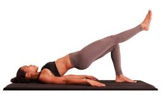

Pont de Glutis- Avançat
COM FER-HO PAS A PAS:
- Tomba’t d’esquena amb un genoll flexionat i l’altre cama estirada i elevada.
- Activa el core abans de començar .
- Eleva el maluc cap amunt mantenint la cama estirada sense tocar el terra.
- Aguanta 1-2 segons a dalt, mantenint el cos alineat i estable.
- Baixa lentament sense deixar que la cama caigui ni que el maluc toquin completament el terra.
- Canvia de cama després de completar totes les repeticions.
SERIES:
- 3-4 sèries de 10-12 repeticions per cama.
- Descans de 45 segons entre sèries.
CONSELLS:
- Mantén el maluc alineat, no deixis que caiguin cap a un costat.
- La cama estirada NO toca el terra en cap moment.
- Expira pujant i inspira baixant.
- Si tremola molt el core, baixa una mica la cama estirada però no la recolzis.
